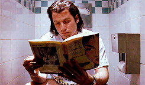

Hello!
Welcome! You have discovered while browsing this site, the projects which keep me active around 21H
per day, 5 days out of 7. Ok, I admit, maybe a little bit more when "Indesign" or "Illustrator" decide to crash
unexpectedly and I have not cmd + s for over an hour...
Seriously now, my approach is oriented towards social and cultural issues always placing the human being
and his needs at the center of my concerns. I try to consider the impact and diffusion of my work in the public
space. Graphic design allows me to explore areas that fascinate me such as the relationship to space and humanity.
I also question my self about perceptions and image statute. Finally, through various workshops and workshops
I have been encouraged to place experimentation at the heart of my creative process and to affirm and develop
my own personality.
